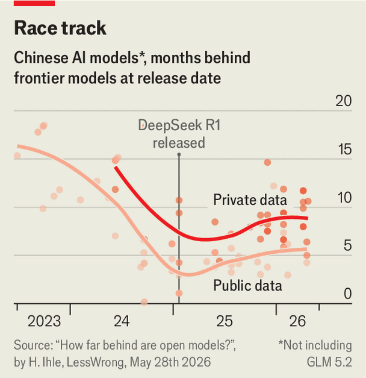

China is having another AI moment
A new model has narrowed the gap with America
June 25th 2026
America’s lead over China in artificial intelligence may be at its smallest in over a year. When China disrupted the ai race in January 2025 with the release of DeepSeek r1, it erased $1trn from America’s capital markets. Nvidia, a chip firm, briefly shed 17% of its value; the Nasdaq sank by 3.1% in a day. American investors were troubled not only because Chinese ai was good, but because it was being given away free. The uproar soon faded. Since then, market valuations everywhere have hinged ever more on the promise that ai will be both revolutionary and profitable.
Now Chinese labs are unsettling their American rivals anew in the race to monopolise the market for models. On June 13th a Beijing-based lab called Zhipu, or Z.ai, announced its latest system, glm 5.2, promising “a step closer to frontier intelligence for everyone”. It is the most capable Chinese-trained model to date and runs at less than a tenth of the price of Anthropic’s latest release, Fable 5. And as with other Chinese models the weights, or parameters, that enable glm 5.2 to function have been publicly released. With this new model, China is competing on ability, cost and openness. The offering looks both compelling and timely.
In recent weeks American companies have been grappling with soaring ai costs, sometimes ranging into the thousands of dollars per employee. Some firms are setting budgets for tokens (bits of text processed by a model). Then on June 12th the Trump administration banned non-Americans from using Fable 5, leading Anthropic to remove the model from service. For the first time, access to frontier ai rests on one government’s say-so. All this may give users reasons to look at alternatives to American ai. Many will find glm 5.2 capable and affordable, and welcome that it is out of the Trump administration’s reach.
Start with capability. Artificial Analysis, a research firm, ranks glm 5.2 as the most intelligent open-source model on the market. glm 5.2 takes an impressive fourth place on its overall list, behind Openai’s Chatgpt 5.5 and ahead of Google’s Gemini bot. The model has surprised everyone. Earlier this year Chinese developers were pessimistic about the prospect of their models outclassing American ones before 2030. After Zhipu’s release, Elon Musk, a very rich man, wrote on X, his social-media site, that he expects China to match the abilities of the current frontier by early next year. It “won’t take that long”, Tang Jie, Zhipu’s co-founder, shot back.
Unlike in the DeepSeek moment, American markets have so far shown little interest in glm 5.2. This is partly because it has become more difficult to assess Chinese models accurately. To arrive at its estimates, Artificial Analysis scored glm 5.2 on dozens of benchmark tests, which use exam-like questions to evaluate a model’s smarts. America, via Anthropic, keeps its edge in performance. Fable 5 is about 17% cleverer than glm 5.2 across an average of benchmark tasks. The other important metric is how long it took glm 5.2 to reach this level of intelligence. A comparable Western model to glm 5.2 was released in February, or about four months ago.
In reality, America’s lead is probably bigger than four months. Open-source models, many of them Chinese, tend to score better on public benchmarks than private ones, says Havard Tveit Ihle of the Norwegian Defence Research Establishment, a think-tank in Norway. The questions used in public benchmark tests are published, whereas those who apply private benchmarks keep their evaluations secret. Analysis by Dr Tveit Ihle published before glm 5.2 found that Chinese models were about four to six months behind American ones on public tests. But on private tests America’s lead nearly doubled, to eight to ten months (see chart). A study by the American government, released in May, identified a similar gap. Mr Tveit Ihle says Chinese labs appear, possibly unwittingly, to “teach to the test”.
On two private benchmarks tested so far, glm 5.2 shows the same hallmarks: it is about seven months behind on Weirdml, a measure of unusual machine-learning tasks that need careful reasoning to solve, and fully a year behind on SimpleBench, which evaluates common sense by trying to trick models. The pattern is not consistent, however. A new exam released by Artificial Analysis on June 19th tests models on office-worker tasks, like sifting through messy files and evaluating conflicting information. glm 5.2 could not have trained for the evaluation. Yet it outperformed Chatgpt 5.5, which is just two months old. These results suggest that America’s lead remains steady, says Mr Tveit Ihle, but are also evidence the gap is not widening as some had expected it would.

What is especially surprising about glm 5.2 is that it succeeds in tasks that tend to trip up its peers. Chinese models often excel in fields with clear right or wrong answers, like maths and coding. But they tend to fall down on problems that are open-ended or that require sustained independent judgment. That pattern reflects one of the largest challenges facing researchers in China. Export controls on advanced chips have left Chinese labs short of the computing power needed to train the strongest models. So they tend to make up ground in post-training: fine-tuning models to behave in particular ways or solve certain kinds of problems, including on data allegedly harvested from American systems through “distillation”.
Given the uncertainties surrounding the true capabilities of Chinese models, next consider whether they are truly cheaper than their American rivals. DeepSeek charges just $0.87 per 1m output tokens for its v4 model, whereas Anthropic charges $50 for the same on Fable 5. Such prices might have a growing appeal in America, where token costs at some firms have run out of control. In June DeepSeek saw a sharp rise in American firms paying for its services, according to Ramp, an invoicing company. Microsoft is reportedly considering using the Chinese lab’s model in its flagship Copilot chatbot. Yet this most important assumption, that Chinese ai is cheaper, can frequently be wrong.
Though Chinese models are becoming more capable, they are generally not becoming more efficient. Chinese models use many more tokens to think through their answers. A study updated this month by Du Zheng of Georgia Tech and co-authors shows that given the same tasks, a DeepSeek model used 23 times more tokens than its Openai rival to achieve basically the same result. Because of these large differences in efficiency, the correct way to compare models is not price per token but the total cost of all the tokens used. Using this metric, on a benchmark designed to test software engineering, glm 5.2 ended up costing more than systems from Anthropic and OpenAI.
In addition to capability and cost, a third selling-point is now top of mind for ai users: reliability. Zhipu released its model at 5:21pm Beijing time on June 13th, one day after the Trump administration told Anthropic that it was banning non-Americans from using Fable 5. “Our attitude is one of radical openness,” Mr Tang declared. He also blasted “external blockades”, such as the one imposed by Anthropic and the American government, saying they made ai systems “subject to revocation at any moment”. The Fable 5 shutdown could help Chinese labs as firms around the world rethink their dependence on American AI.
Most Chinese models are released open-source, meaning they can be downloaded and run on local hardware, out of reach of governments or the labs themselves. But the American government could one day impose limits on the domestic use of Chinese ai. Two congressional committees are currently investigating American tech firms for using Chinese models. And China’s labs face other limitations: a shortage of computing power means they often run into service interruptions, or slow in periods of high traffic.
As the ai race speeds up, regulators everywhere will be faced with new challenges to safety and security. The risk of sudden government intervention may grow. Fable 5 was powerful enough to prompt such a response. That Chinese models are not, for now, facing similar regulatory risk suggests China’s government is not yet alarmed enough to act. That may be some of the clearest evidence that they remain behind their rivals. ■
Subscribers can sign up to Drum Tower, our new weekly newsletter, to understand what the world makes of China—and what China makes of the world.